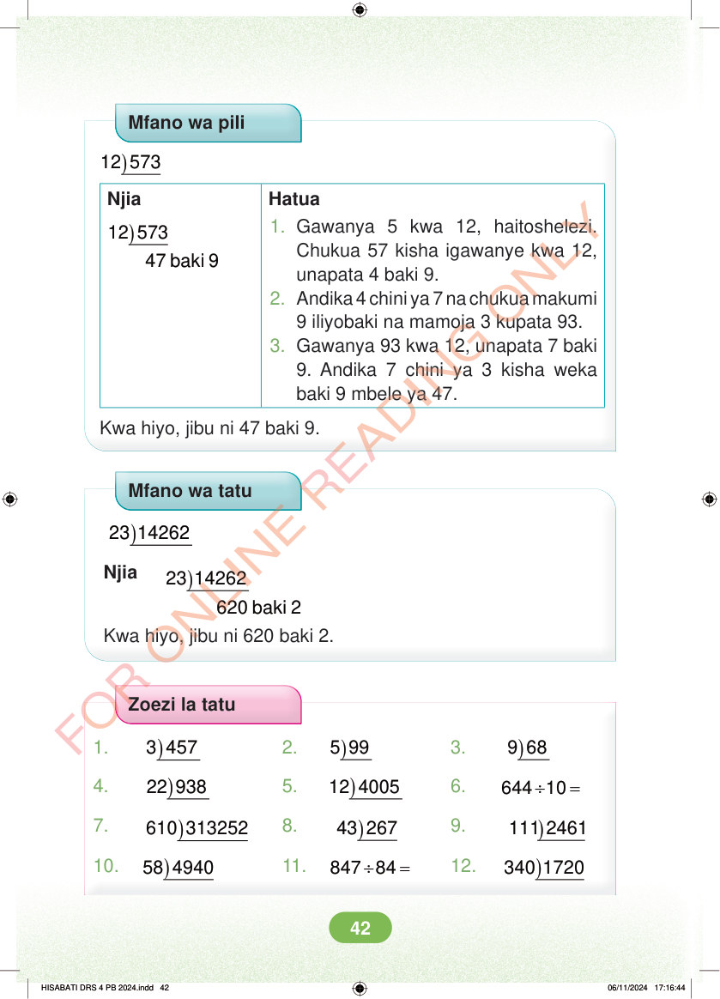

<!DOCTYPE html>
<html lang="sw-TZ"><head><meta charset="utf-8"><meta name="viewport" content="width=device-width,initial-scale=1">
<title>Hisabati: Kitabu cha Mwanafunzi Darasa la Nne</title>
<meta name="title-id" content="pg048_sec001"><meta name="page-section-id" content="50">
<link href="./content/tailwind_output.css" rel="stylesheet"><link href="./assets/libs/fontawesome/css/all.min.css" rel="stylesheet"><link href="./assets/fonts.css" rel="stylesheet">
<style>body{margin:0;background:#eef1ed}main{width:100%;display:flex;justify-content:center;padding:1rem 1rem 5rem;box-sizing:border-box}#content{width:100%;display:flex;justify-content:center}.pdf-page{position:relative;width:min(calc(100vw - 2rem),56rem);aspect-ratio:540.8980102539062/750.6610107421875;background:white;box-shadow:0 4px 24px #0002;overflow:hidden}.pdf-page img{position:absolute;inset:0;width:100%;height:100%;object-fit:fill}</style>
</head><body><main><h1 class="sr-only" id="page-heading">Ukurasa wa 48</h1><div id="content" class="opacity-0"><section role="article" data-section-type="pdf_accessible_page" data-section-id="pg048_sec001" aria-labelledby="page-heading" class="pdf-page"><p class="sr-only" data-id="pg048_gp001_tx001">Mfano wa pili ) 573 12 Njia Hatua ) 573 12 47 baki 9 1. Gawanya 5 kwa 12, haitoshelezi. Chukua 57 kisha igawanye kwa 12, unapata 4 baki 9. 2. Andika 4 chini ya 7 na chukua makumi 9 iliyobaki na mamoja 3 kupata 93. 3. Gawanya 93 kwa 12, unapata 7 baki 9. Andika 7 chini ya 3 kisha weka baki 9 mbele ya 47. Kwa hiyo, jibu ni 47 baki 9. Mfano wa tatu ) 23 14262 ) 23 14262 Njia 620 baki 2 Kwa hiyo, jibu ni 620 baki 2. Zoezi la tatu 1. ) 3 457 2. ) 5 99 3. ) 9 68 4. ) 22 938 5. ) 12 4005 6. ÷ = 644 10 7. ) 610 313252 8. ) 43 267 9. ) 111 2461 10. ) 58 4940 11. ÷ = 847 84 12. ) 340 1720 HISABATI DRS 4 PB 2024.indd 42 HISABATI DRS 4 PB 2024.indd 42 06/11/2024 17:16:44 06/11/2024 17:16:44</p></section></div></main><div class="relative z-50" id="interface-container"></div><div class="relative z-50" id="nav-container"></div><script src="./assets/offline-preloader.js?v=audiofix-20260824-1"></script><script src="./assets/scorm.js"></script><script src="./assets/base.bundle.local.js?v=audiofix-20260824-1"></script></body></html>